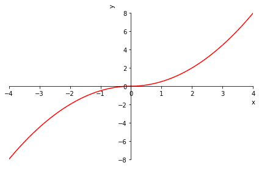
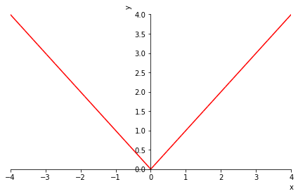

3.3. Successive derivatives#
3.3.1. Definition#
Let us suppose we have a function \(f:(a,b)\longrightarrow\mathbb{R}\) differentiable on \((a,b)\). We can then consider its derivative function on \((a,b)\):
Definition
Given a point \(x_0\in(a,b)\), we define the second derivative of \(f\) at \(x_0\) as the derivative of \(f'\) at \(x_0\), that is, as the following limit:
If this limit exists and is finite, we say that \(f\) is twice differentiable at \(x_0\).
Definition
If \(f\) has a second derivative at every point of \((a,b)\), we define its third derivative at \(x_0\) as the limit, if it exists,
And so we could define the fourth derivative, and so on. In general, once we have \(f^{n-1}:(a,b)\longrightarrow\mathbb{R}\), we define the \(n\)th derivative of \(f\) at \(x_0\) by the analogous limit.
3.3.2. Successive derivatives in Sympy#
To compute successive derivatives in Sympy, we have to add a parameter to sp.diff indicating how many times we want to differentiate:
import sympy as sp
x = sp.symbols('x', real=True)
f_exp = sp.sin(x) + x**2
print('Expression we want to differentiate: ',f_exp)
print('First derivative: ',sp.diff(f_exp,x))
print('Second derivative: ',sp.diff(f_exp,x,2))
print('Third derivative: ',sp.diff(f_exp,x,3))
# Note: the following notation can also be used:
# print(f_exp.diff(x,3))
Expression we want to differentiate: x**2 + sin(x)
First derivative: 2*x + cos(x)
Second derivative: 2 - sin(x)
Third derivative: -cos(x)
3.3.3. Class of a function. Example#
Definition (Class of a function)
Let \(f:(a,b)\longrightarrow\mathbb{R}\). We will say that
\(f\) is of class \(n\) on \((a,b)\), \(f\in\mathcal{C}^n(a,b)\), if the first \(n\) derivatives of \(f\) exist and \(f^{(n)}\) is continuous,
\(f\) is of class \(0\) on \((a,b)\), \(f\in\mathcal{C}^0(a,b)\), if \(f\) is continuous,
\(f\) is of class \(\infty\) on \((a,b)\), \(f\in\mathcal{C}^{\infty}(a,b)\), if \(f\in\mathcal{C}^n(a,b)\) for every \(n\in\mathbb{N}\),
\(f\) is of class \(n\) on \([a,b]\), \(f\in\mathcal{C}^n[a,b]\), if there exists an open interval \((c,d)\supset[a,b]\) such that \(f\in\mathcal{C}^n(c,d)\).
Let us work through a complete example for practice:
Example
Let the function \(f(x)=\dfrac{1}{2}x|x|\), \(\forall x\in\mathbb{R}\). What is the class of \(f\) on \(\mathbb{R}\)?
Answer: First, we split the absolute value depending on whether the inside is positive or negative,
The graph of \(f\) in Sympy can be obtained as follows:
f_expr = 0.5*x*sp.Abs(x)
p = sp.plot(f_expr, (x, -4, 4), show=False)
p[0].line_color='r'
p.xlabel='x'
p.ylabel='y'
p.show()

Now let us check whether \(f\) is continuous. It is clear that \(f\) is continuous at every point \(x\neq 0\), since for \(x<0\) and for \(x>0\) the function is a polynomial. The point \(0\) must be studied more carefully, since there the definition of \(f\) changes. We compute the one-sided limits,
Since both limits agree with the value of the function at that point, we know that \(f\) is continuous at \(0\), and therefore continuous on all of \(\mathbb R\). Hence
f = sp.Lambda(x, f_expr)
display(sp.limit(f(x),x,0,dir='-'))
display(sp.limit(f(x),x,0,dir='+'))
print('Is f of class 0?', sp.limit(f(x),x,0) == f(0))
f es de clase 0? True
Let us now compute the derivative of \(f\). The problematic point is \(x=0\). We first study \(f'(0)\) by computing the one-sided derivatives:
Since the one-sided derivatives coincide, we know that \(f\) is differentiable at \(0\) and that \(f'(0)=0\). At all other points differentiation is straightforward because \(f\) is a polynomial. Therefore,
It is very easy to check that \(f'\) is continuous. Hence
The graph of \(f'\) is obtained as follows.
p = sp.plot(f_expr.diff(x,1), (x, -4, 4), show=False)
p[0].line_color='r'
p.xlabel='x'
p.ylabel='y'
p.show()

We now try to compute the second derivative of \(f\). We begin with the problematic point \(x=0\), computing the one-sided derivatives.
Since the one-sided derivatives do not agree, it follows that \(f''(0)\) does not exist. Therefore
With the help of Sympy we could analyze it as follows:
f1_expr = f_expr.diff(x,1)
f1 = sp.Lambda(x, f1_expr)
h = sp.symbols('h', real=True)
f2_0Minus = sp.limit((f1(h)-f1(0))/h,h,0,dir='-')
f2_0Plus = sp.limit((f1(h)-f1(0))/h,h,0,dir='+')
print('f2_0Minus = ', f2_0Minus, ', f2_0Plus = ', f2_0Plus)
print('Does f\'\'(0) exist?',f2_0Minus==f2_0Plus)
f2_0Minus = -1.00000000000000 , f2_0Plus = 1.00000000000000
Does f''(0) exist? False